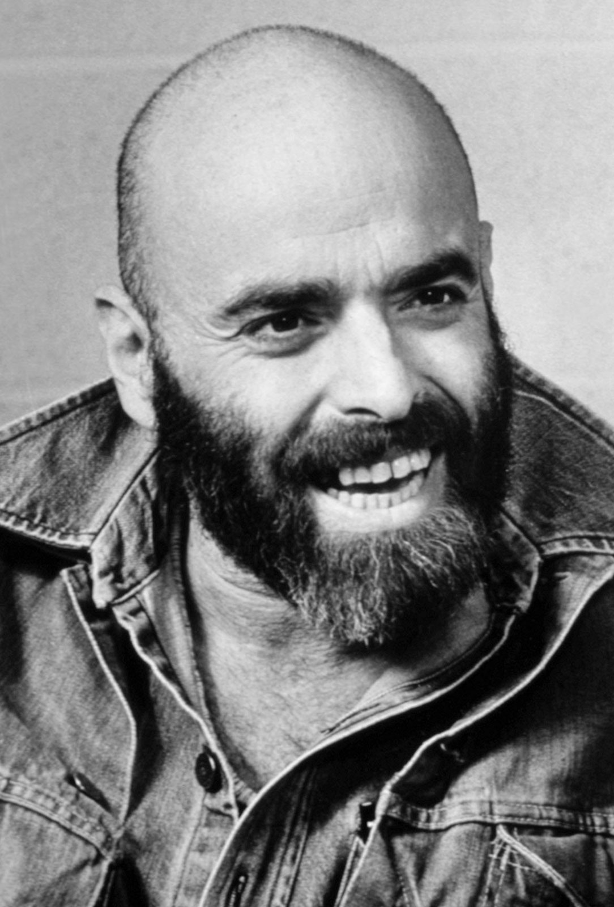
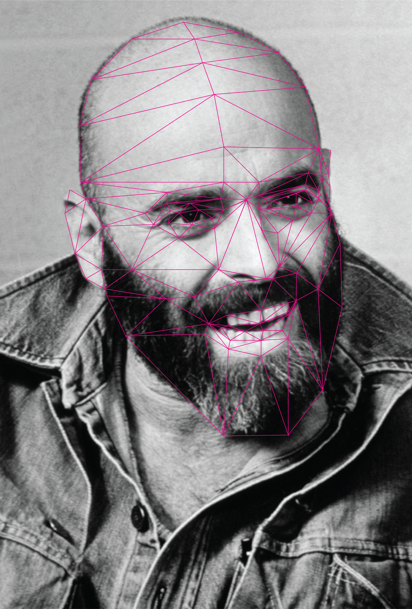
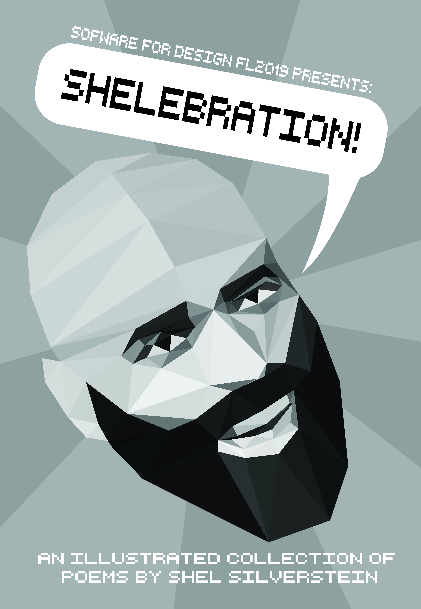

Making a low poly portrait of Shel Silverstein
The final project for my Software for Design class was all about making illustrations for Shel Silverstien poems. He is the author of popular childrens' books such as The Giving Tree, Where the Sidewalk Ends, or Falling up. The whole class collaborated on making a book of illustrations for his poems. The portrait I made was part of the project that I submitted as both a promotional poster, and a possible cover for the book.
Choosing a good image of Shel
I started this project by selecting a nice picture of Shel Silverstein. This part was pretty easy because he was very photogenic. I ended up going with this image, becuase I liked the slight tilt of his head and he has put on a big smile.
Starting to section off each part of Shel's face
I started making the low poly version of Shel by stitching together lines on a new layer in Adobe Illustrator. I had some rules about how many triangles could share a certain point to keep a little bit of order in how they were placed. I made use of direct select to select multiple lines end points at a time and shift them around to sculpt the face.
Filling in the "colors"
I wanted to keep my portrait in black and white, just as the image was. I started by copying my "triangles" layer into a separate one, and posing the frame as I wanted the finished portrait to be posed. I ended up tilting his head a bit more to exaggerate that part of the original image since I liked it so much. I then made all the lines have a weight of 0, so the edges didn't show up at all. Then I just used the eye-dropper tool to randomly decide what color each triangle was. Ideally the triangles would be the average color of the pixels inside them but I didn't care much if it was exact, so I just did it by hand and adjusted it as needed.
The final product
I think I ended up with a really nice poster in the end. I really hope to make more portraits in this style and improve my techniques. I also would be interesting in scripting some of the process, like the coloring of the triangles, which would make producing art like this much easier.
